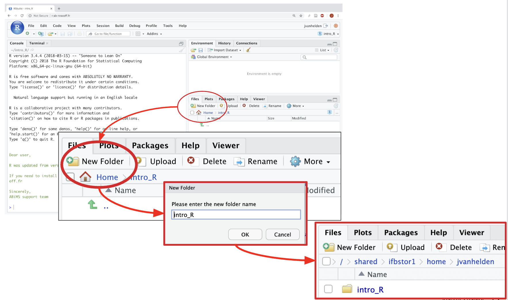
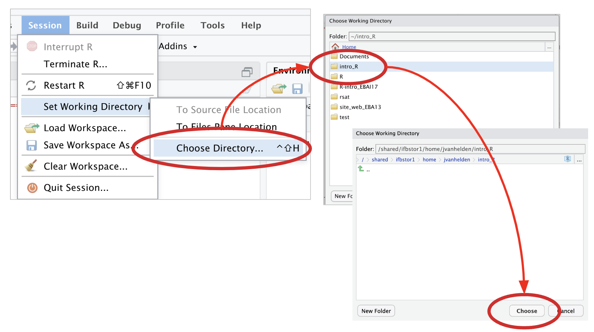

Chapter 5 Import de données
5.1 Version “Avec les boutons”
5.1.1 Création d’un dossier intro_R pour vos résultats de ce TP
Attention Dans votre espace projet ou votre home.

5.1.3 Définissez votre dossier espace de travail (working directory)
- Dans le menu “Session”, lancez “Choose Directory …”
- Naviguez jusqu’à votre dossier intro_R
- Double-cliquez dessus pour l’ouvrir
- Cliquez Choose

5.1.4 Téléchargez les fichiers sur votre machine
A partir d’un navigateur Web, téléchargez et enregistrez sur votre ordi les fichiers de données - expression.txt: données d’expressions pour 4 échantillons - annotation.csv: informations sur les gènes (id, name, chr, start, stop)
Attention: veillez à sauvegarder les fichiers - sous leur nom original, - avec les extensions .txt et .csv respectives (certains navigateurs omettent l’extension, ce qui poserait problème pour la suite du TP)
5.2 The “R geek” way (V2, directement depuis Rstudio)
Attention ! Dans votre espace projet !
5.2.1 Creation de l’arborescence
Aller dans votre espace projet !
Dans tous les commandes ci-dessous, remplacer toujours form_2022_32/EBAII_IntroR par votre nom d’espace projet
Note : Pour les personnes ne travaillant pas sur le cluster mais par exemple en local, vous pouvez sans soucis remplacer l’adresse par une adresse sur votre ordinateur.
setwd("/shared/ifbstor1/projects/form_2022_32/EBAII_IntroR")Définir une variable qui indique le chemin du dossier de travail (working directory).
my_work_dir <- "/shared/ifbstor1/projects/form_2022_32/EBAII_IntroR/intro_R" S’il n’existe pas encore, créer le dossier de travail. (Commande Unix équivalente: mkdir -p /shared/ifbstor1/projects/form_2022_32/EBAII_IntroR/intro_R)
dir.create(my_work_dir, recursive = TRUE, showWarnings = FALSE)Où suis-je ? (Commande Unix équivalente: pwd)
getwd()## [1] "/shared/ifbstor1/projects/form_2022_32/EBAII_IntroR"Aller dans ce dossier de travail (Commande Unix équivalente: cd /shared/ifbstor1/projects/form_2022_32/EBAII_IntroR/intro_R)
setwd(my_work_dir)Et maintenant, où suis-je ?
getwd()## [1] "/shared/ifbstor1/projects/form_2022_32/EBAII_IntroR"Qu’y a-t-il par ici ? (Commande Unix équivalente: ls)
list.files()## [1] "_bookdown_files" "_bookdown.yml" "_main_files"
## [4] "_main.Rmd" "_output.yml" "01-intro.Rmd"
## [7] "02-how.Rmd" "03-firstSteps.Rmd" "04-uploadData.Rmd"
## [10] "05-readData.Rmd" "06-manipulate.Rmd" "07-plots.Rmd"
## [13] "08-analyseDiff.Rmd" "09-integration.Rmd" "10-visu.Rmd"
## [16] "11-conclusion.Rmd" "12-references.Rmd" "annotation.csv"
## [19] "book.bib" "docs" "EBAII_IntroR.Rproj"
## [22] "expression.txt" "exprs_chr8.txt" "images"
## [25] "index.Rmd" "intro_R" "LICENSE"
## [28] "packages.bib" "preamble.tex" "README.md"
## [31] "style.css"Un autre nom pour la même commande
dir()## [1] "_bookdown_files" "_bookdown.yml" "_main_files"
## [4] "_main.Rmd" "_output.yml" "01-intro.Rmd"
## [7] "02-how.Rmd" "03-firstSteps.Rmd" "04-uploadData.Rmd"
## [10] "05-readData.Rmd" "06-manipulate.Rmd" "07-plots.Rmd"
## [13] "08-analyseDiff.Rmd" "09-integration.Rmd" "10-visu.Rmd"
## [16] "11-conclusion.Rmd" "12-references.Rmd" "annotation.csv"
## [19] "book.bib" "docs" "EBAII_IntroR.Rproj"
## [22] "expression.txt" "exprs_chr8.txt" "images"
## [25] "index.Rmd" "intro_R" "LICENSE"
## [28] "packages.bib" "preamble.tex" "README.md"
## [31] "style.css"5.2.2 Télécharger un fichier
Nous avons montré ci-dessus comment télécharger des fichiers en utilisant l’interface graphique de RStudio.
Alternativement, on peut télécharger des fichiers au moyen de la commande R download.file.
Les deux commandes suivantes permettent de télécharger les fichiers utilisés pour les exercices.
download.file(url = "https://raw.githubusercontent.com/IFB-ElixirFr/EBAII/master/2022/ebaiin1/intro_R/expression.txt", destfile = "expression.txt")download.file(url = "https://raw.githubusercontent.com/IFB-ElixirFr/EBAII/master/2022/ebaiin1/intro_R/annotation.csv", destfile = "annotation.csv")Note : équivalent de la commande wget sous Unix.
Qu’y a-t-il par ici ? (Commande Unix équivalente: ls)
list.files()## [1] "_bookdown_files" "_bookdown.yml" "_main_files"
## [4] "_main.Rmd" "_output.yml" "01-intro.Rmd"
## [7] "02-how.Rmd" "03-firstSteps.Rmd" "04-uploadData.Rmd"
## [10] "05-readData.Rmd" "06-manipulate.Rmd" "07-plots.Rmd"
## [13] "08-analyseDiff.Rmd" "09-integration.Rmd" "10-visu.Rmd"
## [16] "11-conclusion.Rmd" "12-references.Rmd" "annotation.csv"
## [19] "book.bib" "docs" "EBAII_IntroR.Rproj"
## [22] "expression.txt" "exprs_chr8.txt" "images"
## [25] "index.Rmd" "intro_R" "LICENSE"
## [28] "packages.bib" "preamble.tex" "README.md"
## [31] "style.css"5.3 The “bash geek” way (V3, directement de votre home du cluster)
Objectif
Dans le terminal du cluster, téléchargez et enregistrez dans votre home les fichiers de données: - expression.txt: données d’expressions pour 4 échantillons - annotation.csv: informations sur les gènes (id, name, chr, start, stop)
Ouvrez un connection ssh
ssh [votre_login]@core.cluster.france-bioinformatique.frOù suis-je ?
pwd## /shared/ifbstor1/projects/form_2022_32/EBAII_IntroRCréez un répertoire “intro_R”
mkdir -p /shared/ifbstor1/projects/form_2022_32/EBAII_IntroR/intro_RDéplacez-vous dans votre dossier
cd /shared/ifbstor1/projects/form_2022_32/EBAII_IntroR/intro_ROù suis-je maintenant ?
pwd## /shared/ifbstor1/projects/form_2022_32/EBAII_IntroRTéléchargez les données
wget https://raw.githubusercontent.com/IFB-ElixirFr/EBAII/master/2022/ebaiin1/intro_R/expression.txt --output-document=expression.txt## --2022-11-15 17:19:24-- https://raw.githubusercontent.com/IFB-ElixirFr/EBAII/master/2022/ebaiin1/intro_R/expression.txt
## Resolving raw.githubusercontent.com (raw.githubusercontent.com)... 185.199.111.133, 185.199.110.133, 185.199.108.133, ...
## Connecting to raw.githubusercontent.com (raw.githubusercontent.com)|185.199.111.133|:443... connected.
## HTTP request sent, awaiting response... 200 OK
## Length: 1747 (1.7K) [text/plain]
## Saving to: ‘expression.txt’
##
## 0K . 100% 16.6M=0s
##
## 2022-11-15 17:19:24 (16.6 MB/s) - ‘expression.txt’ saved [1747/1747]wget https://raw.githubusercontent.com/IFB-ElixirFr/EBAII/master/2022/ebaiin1/intro_R/annotation.csv -O annotation.csv## --2022-11-15 17:19:24-- https://raw.githubusercontent.com/IFB-ElixirFr/EBAII/master/2022/ebaiin1/intro_R/annotation.csv
## Resolving raw.githubusercontent.com (raw.githubusercontent.com)... 185.199.111.133, 185.199.109.133, 185.199.110.133, ...
## Connecting to raw.githubusercontent.com (raw.githubusercontent.com)|185.199.111.133|:443... connected.
## HTTP request sent, awaiting response... 200 OK
## Length: 2326 (2.3K) [text/plain]
## Saving to: ‘annotation.csv’
##
## 0K .. 100% 25.9M=0s
##
## 2022-11-15 17:19:24 (25.9 MB/s) - ‘annotation.csv’ saved [2326/2326]Qu’y a-t-il ici ?
ls -l## total 133
## -rw-r--r--+ 1 tdenecker tdenecker 1843 Nov 15 09:19 01-intro.Rmd
## -rw-r--r--+ 1 tdenecker tdenecker 996 Nov 15 09:40 02-how.Rmd
## -rw-r--r--+ 1 tdenecker tdenecker 1478 Nov 15 09:48 03-firstSteps.Rmd
## -rw-r--r--+ 1 tdenecker tdenecker 5467 Nov 15 10:30 04-uploadData.Rmd
## -rw-r--r--+ 1 tdenecker tdenecker 1790 Nov 15 10:46 05-readData.Rmd
## -rw-r--r--+ 1 tdenecker tdenecker 1419 Nov 15 11:57 06-manipulate.Rmd
## -rw-r-----+ 1 tdenecker tdenecker 1882 Nov 15 12:20 07-plots.Rmd
## -rw-r-----+ 1 tdenecker tdenecker 2490 Nov 15 12:38 08-analyseDiff.Rmd
## -rw-r-----+ 1 tdenecker tdenecker 1490 Nov 15 15:51 09-integration.Rmd
## -rw-r-----+ 1 tdenecker tdenecker 1422 Nov 15 17:19 10-visu.Rmd
## -rw-r-----+ 1 tdenecker tdenecker 1128 Nov 15 12:35 11-conclusion.Rmd
## -rw-r--r--+ 1 tdenecker tdenecker 54 Nov 14 21:51 12-references.Rmd
## -rw-rw----+ 1 tdenecker tdenecker 2326 Nov 15 17:19 annotation.csv
## -rw-r--r--+ 1 tdenecker tdenecker 267 Nov 14 21:51 book.bib
## drwxrwx---+ 2 tdenecker tdenecker 4096 Nov 15 17:19 _bookdown_files
## -rw-r--r--+ 1 tdenecker tdenecker 113 Nov 15 16:00 _bookdown.yml
## drwxrwx---+ 5 tdenecker tdenecker 12288 Nov 15 17:19 docs
## -rw-rw----+ 1 tdenecker tdenecker 247 Nov 15 15:48 EBAII_IntroR.Rproj
## -rw-rw----+ 1 tdenecker tdenecker 1747 Nov 15 17:19 expression.txt
## -rw-rw----+ 1 tdenecker tdenecker 244 Nov 15 17:18 exprs_chr8.txt
## drwxrwx---+ 2 tdenecker tdenecker 4096 Nov 15 12:35 images
## -rw-r--r--+ 1 tdenecker tdenecker 1348 Nov 15 15:58 index.Rmd
## drwxrwx---+ 2 tdenecker tdenecker 4096 Nov 15 10:25 intro_R
## -rw-rw----+ 1 tdenecker tdenecker 1551 Nov 14 21:50 LICENSE
## drwxrwx---+ 4 tdenecker tdenecker 4096 Nov 15 17:18 _main_files
## -rw-r--r--+ 1 tdenecker tdenecker 23283 Nov 15 17:19 _main.Rmd
## -rw-r--r--+ 1 tdenecker tdenecker 500 Nov 14 21:52 _output.yml
## -rw-rw----+ 1 tdenecker tdenecker 2655 Nov 15 17:19 packages.bib
## -rw-r--r--+ 1 tdenecker tdenecker 22 Nov 14 21:51 preamble.tex
## -rw-r--r--+ 1 tdenecker tdenecker 311 Nov 15 09:29 README.md
## -rw-r--r--+ 1 tdenecker tdenecker 172 Nov 14 21:51 style.cssA quoi ressemblent ces fichiers ?
head expression.txt## id WT1 WT2 KO1 KO2
## ENSG00000034510 235960 94264 202381 91336
## ENSG00000064201 116 71 64 56
## ENSG00000065717 118 174 124 182
## ENSG00000099958 450 655 301 472
## ENSG00000104164 4736 5019 4845 4934
## ENSG00000104783 9002 8623 7720 7142
## ENSG00000105229 1295 2744 1113 2887
## ENSG00000105723 3353 7449 3589 7202
## ENSG00000116199 2044 4525 2604 4902head annotation.csv## id;name;chr;start;stop;strand
## ENSG00000225630;MTND2P28;1;629640;630683;+
## ENSG00000134198;TSPAN2;1;115048011;115089500;-
## ENSG00000116199;FAM20B;1;179025804;179076562;+
## ENSG00000119285;HEATR1;1;236549005;236604504;-
## ENSG00000034510;TMSB10;2;84905625;84906675;+
## ENSG00000198586;TLK1;2;170990823;171231314;-
## ENSG00000157036;EXOG;3;38496127;38542161;+
## ENSG00000157869;RAB28;4;13361354;13484365;-
## ENSG00000250202;RP11-397E7.2;4;86876338;86876652;+